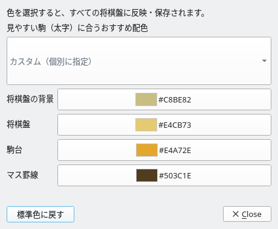
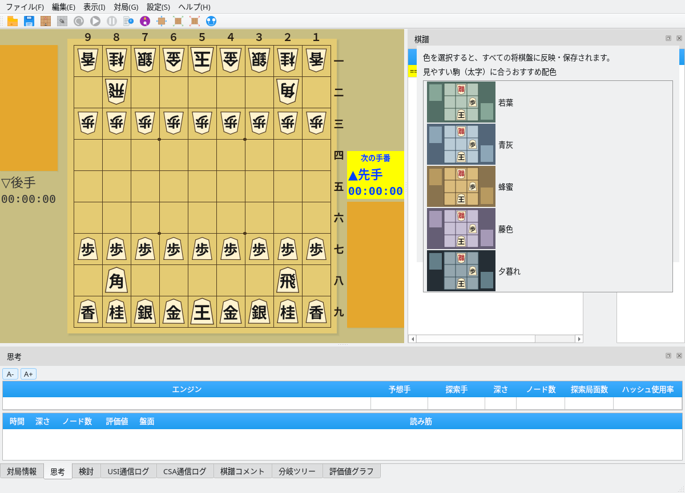

盤面の配色
駒に合う配色を選んで、自分好みの将棋盤に
駒ごとのおすすめ配色
4項目を個別調整
設定を保存
配色の設定を開く
メニューの「表示」→「盤面の配色…」を選択します
「盤面の配色」ダイアログには、おすすめ配色の一覧と、4項目の色設定が表示されます。各ボタンには現在の色見本とカラーコードが表示され、変更する場所を確認できます。画像をクリックすると元のサイズで表示できます。
{kind=link}

配色の設定画面：おすすめ配色の選択と4項目の個別調整
おすすめ配色から選ぶ
現在の駒に合わせた5種類の候補を、プレビュー付きで選べます
ダイアログ上部の一覧を開き、好みの配色を選びます。将棋盤の背景・将棋盤・駒台・マス罫線の4色がまとめて反映されます。まず「駒の種類」を選んでから配色を設定すると、駒と盤面の組み合わせを決めやすくなります。
{kind=link}

おすすめ配色の一覧：小さな盤面のプレビューで色の組み合わせを確認
駒ごとのおすすめ配色
駒の種類を変更すると、おすすめの候補も切り替わります。新しい配色を選択するまでは、現在の盤面の色が維持されます。
| 駒の種類 | おすすめ配色 |
|---|---|
| 標準の駒 | 畳と榧・薄茶・若竹・暖かな灰色・藍染 |
| 見やすい駒（太字） | 若葉・青灰・蜂蜜・藤色・夕暮れ |
| 木目の駒（明朝） | 苔庭・胡桃・生成り・深い森・石庭 |
| 白い駒（ゴシック） | 藍夜・青磁の海・セージ・ラベンダー・墨色 |
| 黒い駒（金文字） | 金屏風・銀鼠・青磁・桜霞・砂紋 |
{kind=link}
{kind=link}
{kind=link}
色を個別に調整する
おすすめ配色をもとに、一部分だけ好みの色へ変えることもできます
1
変更したい項目の色ボタンを押す
| 項目 | 変更する場所 |
|---|---|
| 将棋盤の背景 | 盤や駒台の周囲にある背景 |
| 将棋盤 | 駒を配置する盤の面 |
| 駒台 | 先手・後手の持ち駒を置く台 |
| マス罫線 | 盤のマスを区切る線 |
2
色を選んで確定する
色選択ダイアログで好みの色を選び、「OK」を押すと反映されます。「Cancel」で閉じた場合、その色の変更は反映されません。おすすめの組み合わせと異なる色にすると、一覧は「カスタム（個別に指定）」の表示になります。

色選択ダイアログ：色見本やカラーコードから指定できます
3
設定の保存と標準色への復帰
選択した配色はすべての将棋盤に反映され、自動で保存されます。配色の設定画面を閉じても変更は維持され、次回起動時にも引き継がれます。
初期設定の配色に戻すには「標準色に戻す」を押します。駒の種類はそのままで、4項目の色を標準色に戻せます。好みの駒と配色にした盤面は、画像エクスポートで保存することもできます。